A Full-Stack MERN Personal Finance Tracker

| Project Title | ExpenseTracker — Personal Expense & Budget Management System |
| Submitted By | Sharma Saurabh |
| Roll Number | 250863131007 |
| Institute | Laxmi Institute of Technology (LIT), Sarigam — Laxmi Vidyapeeth |
| Department | Computer Engineering (CSE) |
| University | Gujarat Technological University (GTU) |
| Project Guide | X |
| Academic Year | 2025–2026 |
| Report Date | 08 October 2026 |
ExpenseTracker is a complete personal finance management web application built on the MERN stack (MongoDB, Express.js, React.js, Node.js). It allows a user to record income and expenses, organise them into categories, set monthly budgets, track savings goals, automate recurring payments, and understand spending behaviour through interactive analytics and monthly reports.
The project is a ground-up rebuild: the database design, backend API, frontend UI, and design system were all written fresh, while keeping every feature of the original reference implementation and adding a substantial set of new capabilities — including a light/dark mode, a multi-theme design engine (8 selectable themes), CSV export, favorite transactions, receipt uploads, smart notifications, month-over-month reporting, and a much stronger validation and security layer.
Design language: Option 8 — Warm White + Espresso + Sage, rendered entirely in the JetBrains Mono typeface for a clean, engineering-first, monospaced look.
await (no Promise.all), small single-purpose files, no Docker, no third-party APIs.| Layer | Technology | Why chosen |
|---|---|---|
| Database | MongoDB (local, DB expenseTracker) |
Flexible schema for varied finance records |
| Backend | Node.js + Express.js | Lightweight REST API, easy to explain |
| ODM | Mongoose 8 | Schema validation, populated references |
| Frontend | React 18 (Vite) | Fast dev server, component model |
| State | Redux Toolkit | Predictable, minimal boilerplate slices |
| Routing | React Router v6 | Declarative protected routes |
| Charts | Recharts | React-friendly bar/line/pie charts |
| Styling | Tailwind CSS (darkMode: class) + custom component classes |
Rapid, consistent styling |
| Typography | JetBrains Mono (full UI) | Distinctive monospace identity |
| HTTP | Axios (centralized services/api.js) |
Single interceptor for auth + errors |
| Toasts | react-hot-toast | Lightweight feedback |
| Uploads | Multer (2 MB receipt images) | Server-side receipt storage |
| Auth | JWT + bcryptjs | Stateless auth, hashed passwords |
| Security | helmet, CORS allow-list | Hardened defaults |
Ports: Backend 5000, Frontend 5173 (Vite proxies /api and /uploads → backend, so no CORS pain in dev).
| Token | Hex | Usage |
|---|---|---|
| Background | #FAF8F3 |
Page background |
| Text | #29231F |
Primary text |
| Primary (Espresso) | #493B32 |
Buttons, active states, sidebar brand |
| Accent (Sage) | #78816A |
Charts, links, highlights |
| Sage tint | #E9EDE4 |
Sidebar, soft panels |
| Beige tint | #E9DFD1 |
Stat cards, hero balance card |
| Card | #FFFFFF |
Surfaces |
All colors are exposed as CSS variables (--bg, --text, --card, --border, --primary, --accent, --sage, --beige, …) defined for both :root and .dark, so switching theme or dark mode is a pure CSS-variable swap — no component needs to know about colors.
client/src/themes/ (option1…option8), one file per theme, plus a small registry (themes/index.js) exposing getTheme() / applyTheme().localStorage (theme, themeId).dark toggle is independent and also persisted; navbar moon icon toggles it from any page.14-theme-burgundy.png proves one click swaps the whole identity of the app.:focus-visible outlines, keyboard-dismissable modals (Escape), labelled inputs.inputMode="decimal", sanitized (digits + one dot + max 2 decimals), browser spinners hidden.ExpenseTracker/
├── server/ # Express API
│ ├── src/
│ │ ├── config/env.js # ONLY file that reads process.env
│ │ ├── models/ # 7 Mongoose models
│ │ ├── middleware/ # auth (JWT), error, upload (multer)
│ │ ├── utils/ # notify, processRecurring, buildCsv, sanitize…
│ │ ├── controllers/ # 8 controllers
│ │ ├── routes/ # 8 routers (40 endpoints)
│ │ ├── seed/seed.js # 2 demo users + data
│ │ ├── app.js server.js
│ └── .env / .env.example
└── client/ # React (Vite) SPA
├── src/
│ ├── config/env.js # ONLY file that reads import.meta.env
│ ├── themes/ # 8 theme files + registry
│ ├── features/ # 8 Redux slices + store
│ ├── services/api.js # axios instance + interceptors
│ ├── layout/ # Sidebar, Navbar, MainLayout
│ ├── common/ # Modal, EmptyState, Skeletons, charts
│ ├── pages/ # 11 pages
│ ├── hooks/ utils/
│ └── index.css # variables + component classes
└── vite.config.js (proxy)
Data flow: Page → Redux slice → services/api.js (axios + JWT header) → Express route → controller → Mongoose model → MongoDB → JSON back → slice state → Recharts/UI.
| # | Feature | Notes |
|---|---|---|
| 1 | Register / Login | JWT, bcrypt, profile update |
| 2 | Dashboard | Balance, month income/expense, donut, budget bars, recent tx |
| 3 | Transactions CRUD | Income + expense, filters, search, pagination |
| 4 | Categories CRUD | Custom categories with icons/emoji, income+expense types |
| 5 | Monthly Budgets | Per-category limits, progress bars, over-budget status |
| 6 | Savings Goals | Target vs current, contributions, progress |
| 7 | Recurring Expenses | Monthly frequency, active toggle, auto-posting when due |
| 8 | Analytics | Bar/line/pie charts: monthly trend, category, payment method |
| # | Feature | What it does |
|---|---|---|
| 1 | Light / Dark mode | Class-based, persisted, one-click toggle |
| 2 | 8 selectable themes | Profile → Appearance; one file per theme |
| 3 | Monthly Reports page | Month navigator, MoM comparison, insight banner ("spent 48% less than last month"), category table with change %, payment-method breakdown |
| 4 | CSV export | GET /api/transactions/csv streams a downloadable CSV of filtered data |
| 5 | Favorites | Star frequent transactions; dedicated favorites list |
| 6 | Receipt upload | Attach ≤2 MB image per transaction; lightbox preview |
| 7 | Smart notifications | Budget-near/over, goal milestones, recurring-due, welcome — with de-duplication (key field) |
| 8 | Recurring auto-post | On login/app load, due recurring items are posted as real transactions |
| 9 | Multi-chart analytics | Vertical selector: Bar / Line / Pie / Area / Donut for each analysis |
| 10 | Tags | Free-form tags (home, work) on transactions + filter |
| 11 | Advanced filters | Date range, category, type, payment method, amount range, favorites-only |
| 12 | Empty & loading states | Dedicated EmptyState art + skeleton loaders on every page |
| 13 | Amount sanitization | Client + server validation (rejects abc, -5, >2 decimals) |
| 14 | Centralized env | One config file per side for all environment variables |
| 15 | Security pass | helmet, CORS allow-list, generic auth errors, ownership checks on every query |
| 16 | Micro-interactions | Row flash on create, hover lifts, modal animation, focus rings |
| Area | Original | Rebuild |
|---|---|---|
| State | local/useState patterns |
Redux Toolkit slices |
| Themes | fixed palette | 8 themes + dark mode |
| Reports | basic totals | MoM insight + category change % |
| Export | none | CSV |
| Validation | client mostly | client and server (toAmount) |
| Notifications | basic | de-duplicated smart alerts |
| Config | scattered process.env |
2 centralized config files |
| Design | generic | Option 8 + JetBrains Mono |
| Model | Key fields |
|---|---|
| User | name, email (unique), password (bcrypt), currency, monthlyIncome, theme prefs |
| Category | user, name, type (income/expense), icon, color |
| Transaction | user, type, amount, category→Category, description, date, paymentMethod, tags[], receipt, favorite, notes |
| Budget | user, category→Category, amount, month, year |
| SavingsGoal | user, title, targetAmount, currentAmount, targetDate, icon |
| RecurringExpense | user, title, amount, category, frequency, nextDate, paymentMethod, active |
| Notification | user, type, title, message, key (de-dup), read |
All finance models are indexed by user + date/month-year for fast aggregation. Every query filters by user: req.user._id — users can never see each other's data.
| Router | Endpoints |
|---|---|
/api/auth |
POST /register, POST /login, GET /me, PUT /profile |
/api/transactions |
GET /, POST /, GET /:id, PUT /:id, DELETE /:id, GET /csv, GET /favorites, PATCH /:id/favorite, PATCH /:id/receipt |
/api/categories |
GET /, POST /, PUT /:id, DELETE /:id (blocked if used by recurring) |
/api/budgets |
GET /, POST /, PUT /:id, DELETE /:id |
/api/goals |
GET /, POST /, PUT /:id, DELETE /:id, POST /:id/add-money |
/api/recurring-expenses |
GET /, POST /, PUT /:id, DELETE /:id, PATCH /:id/toggle |
/api/analytics |
GET /dashboard, GET /monthly, GET /categories, GET /payment-methods, GET /reports |
/api/notifications |
GET /, PATCH /read-all, PATCH /:id/read, DELETE /:id |
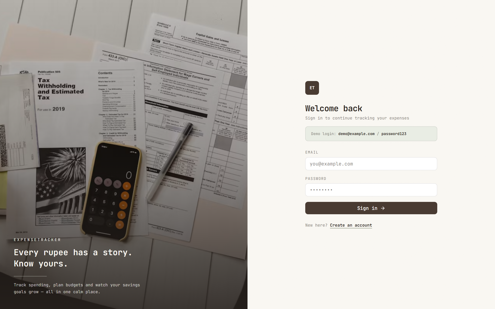
Split-screen login with Unsplash imagery (with offline fallback) and monospace form.

Balance hero card, income/expense stats, month-at-a-glance bar chart, category donut, budget progress bars, recent transactions.
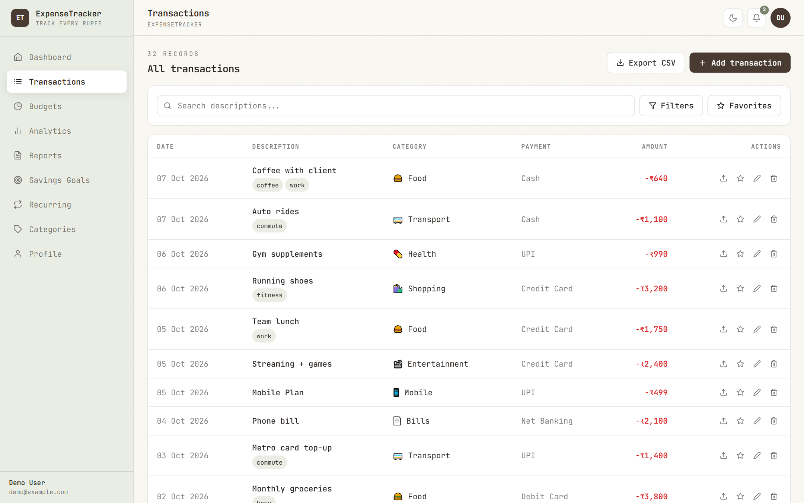
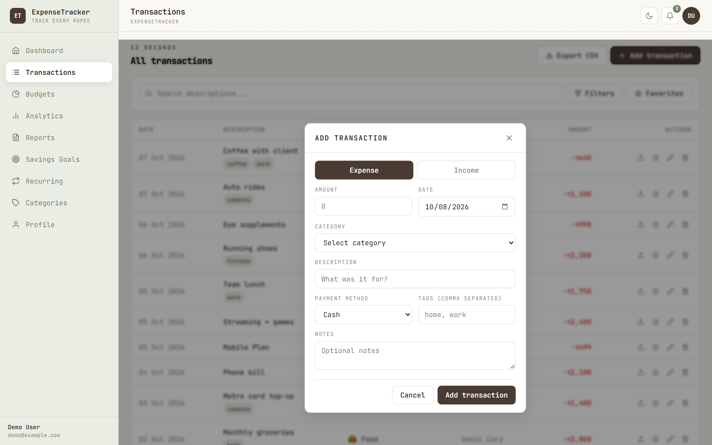
Filters (search, type, category, date range, tags), CSV export, favorites; sanitized amount input in the modal.

Per-category monthly limits with progress bars and over-budget highlighting.
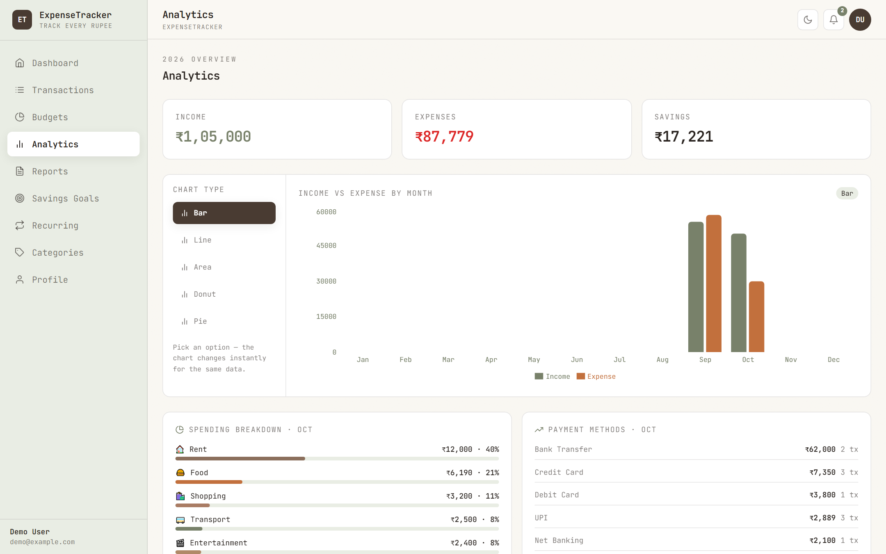

Vertical chart-type selector switches Bar → Line (Pie/Area/Donut also available) without leaving the page.

Month navigator, MoM insight banner, 6-month income-vs-expense chart, category table with change %, top categories, payment-method split, CSV export.
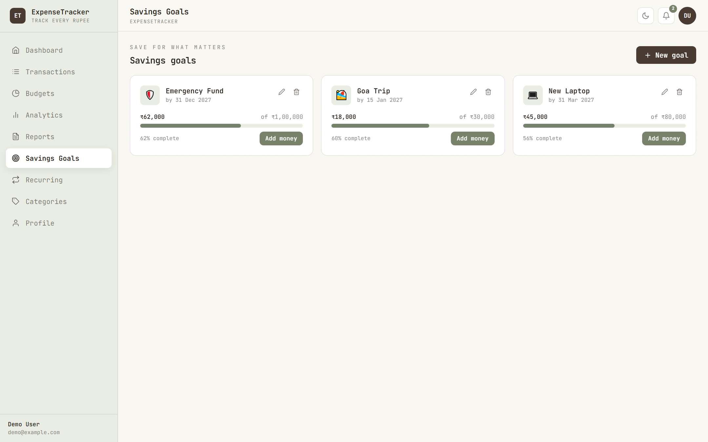
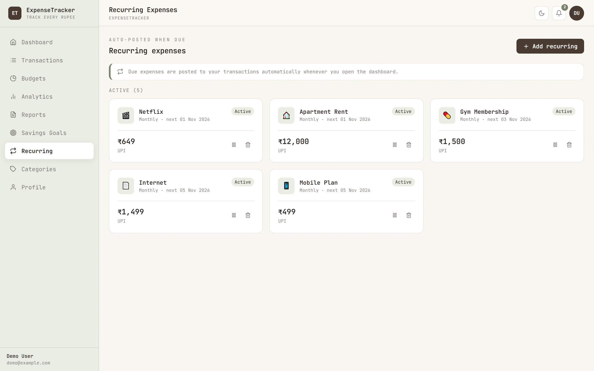

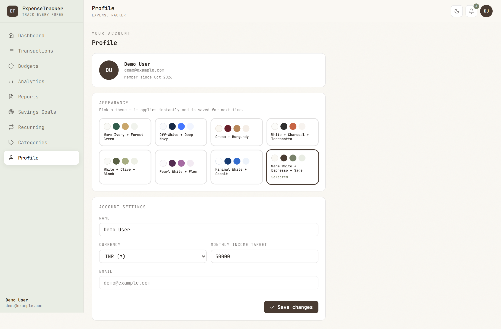
Profile → Appearance: 8 theme cards; current theme highlighted.
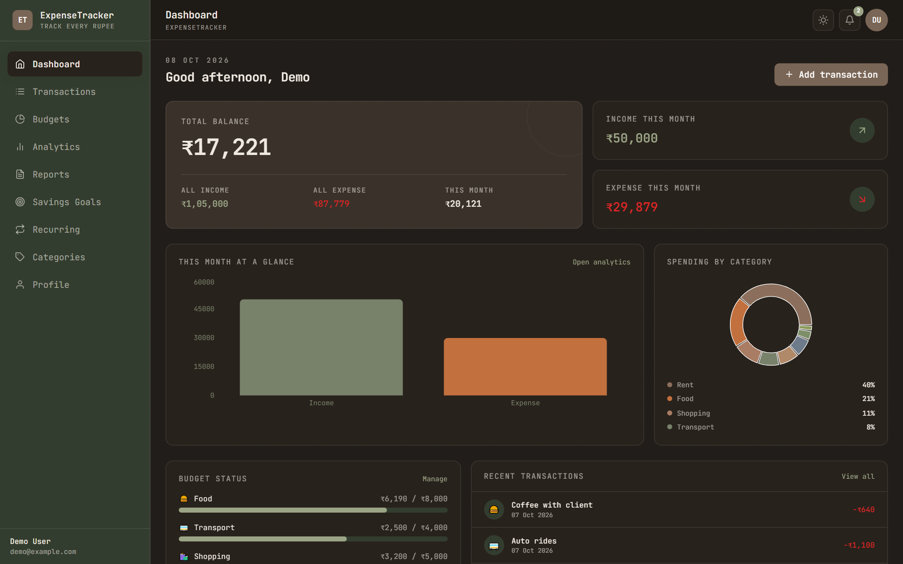
Dark mode dashboard — same data, inverted palette.

Same dashboard after one click on "Cream + Burgundy" — full re-skin via CSS variables.
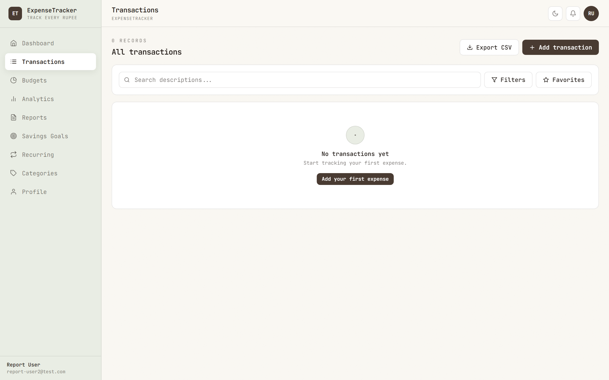
Fresh account — friendly empty state instead of a blank table.
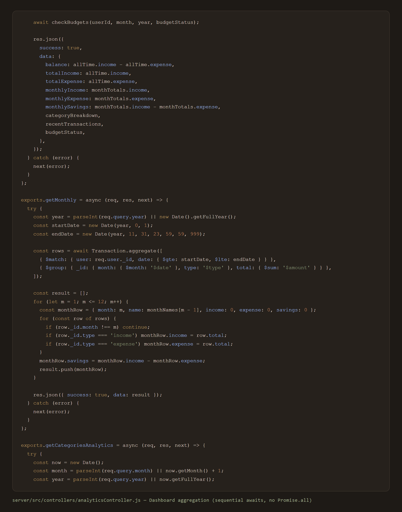
Note the fixed MongoDB pitfall: non-_id fields inside $group must use accumulators ({ $first: '$field' }), not bare paths — this exact bug was found and fixed during testing.
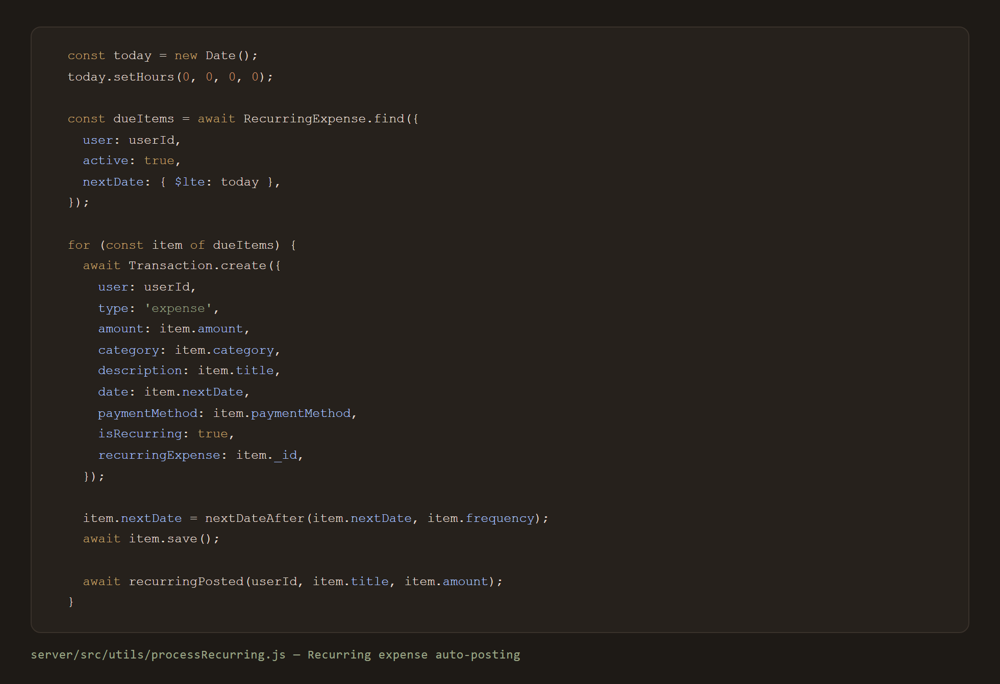
Due recurring items become real transactions automatically.
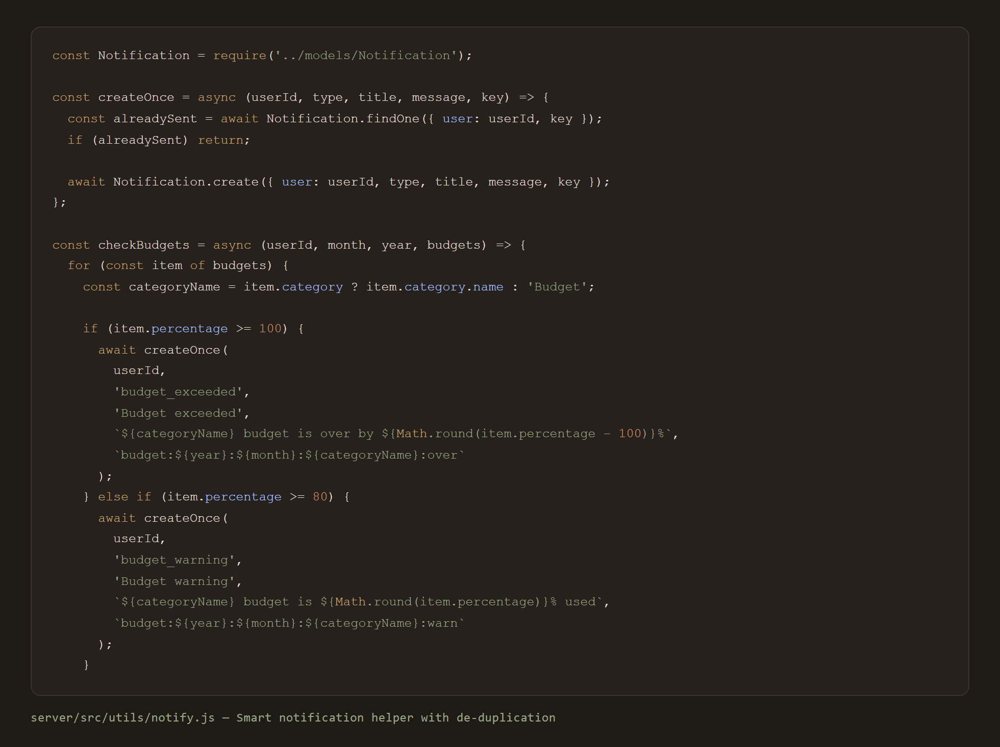
De-duplication via a stable key so the same budget warning never spams the bell.

Adding a 9th theme means adding one file + one registry entry — nothing else changes.
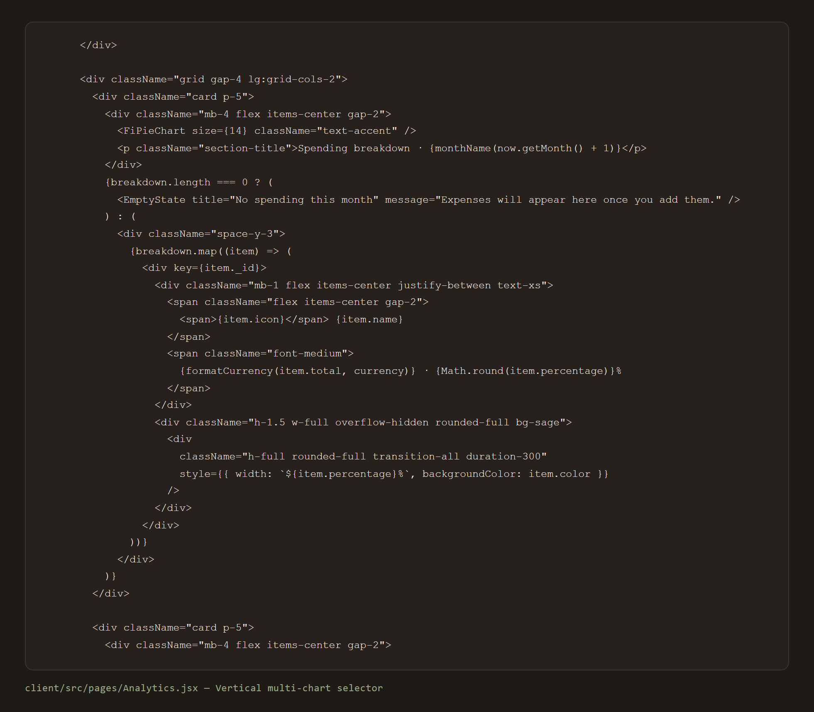
Data stays mounted; only the chart component swaps — animation stays smooth.

Client blocks bad keystrokes; server independently rejects abc, -5, 12.345 (→ 400).
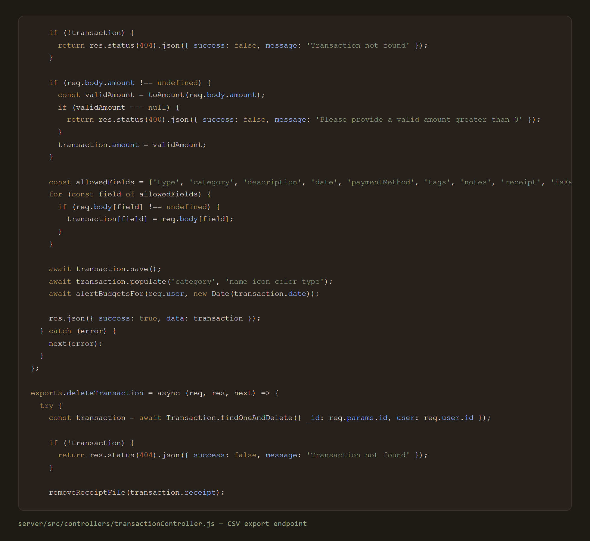
Streams a proper text/csv download with date-stamped filename.
Authorization: Bearer header; axios interceptor attaches/ clears it.user: req.user._id.sanitize.js helper — invalid amounts, empty titles, bad enums → 400 with clear messages.server/src/config/env.js and client/src/config/env.js read raw env vars; secrets live in .env (git-ignored, .env.example provided).Prerequisites: Node.js ≥ 18, MongoDB running locally (default port 27017).
# 1. Backend
cd server
npm install
cp .env.example .env # or create .env manually
npm run seed # creates demo + saurabh users with data
npm run dev # http://localhost:5000
# 2. Frontend (new terminal)
cd client
npm install
npm run dev # http://localhost:5173
Login accounts (seeded):
| Password | Data | |
|---|---|---|
demo@example.com |
password123 |
31 transactions, 5 budgets, 5 recurring, 3 goals |
saurabh@gmail.com |
saurabh123 |
18 transactions, 3 budgets, 3 recurring, 3 goals |
| Area | Test | Result |
|---|---|---|
| Auth | register / login / getMe | ✅ 200 |
| Dashboard | summary aggregation | ✅ 200 (after $group fix) |
| Reports | MoM + categories + payment methods | ✅ 200 |
| CRUD | transactions, budgets, goals, recurring, categories | ✅ 200 |
| CSV | GET /transactions/csv |
✅ valid CSV stream |
| Validation | amount abc, -5 |
✅ 400 rejected |
| Validation | amount 123.456 |
✅ stored 123.46 |
| Validation | budget 0 |
✅ 400 rejected |
| Category delete | delete category used by recurring | ✅ blocked |
| Frontend | npm run build |
✅ success (948 modules) |
| Seeding | both demo users created | ✅ verified |
Known cosmetic note: client build prints a chunk-size warning (>500 kB) because Recharts bundles all chart types — a warning only, not an error; handled by lazy-loading charts in future scope.
| Challenge | Solution |
|---|---|
MongoDB error: The field 'name' must be an accumulator object |
Non-_id fields in $group need accumulators; replaced bare paths with { $first: '$name' } in 3 pipelines |
Tailwind .table-row { display: table-row } clashed with the custom .table-row component class (broke a flex row) |
Renamed component class to .row-hover; zero table-row in built CSS now |
Amount fields accepted abc / negative / >2 decimals |
Added sanitizeAmountInput (client) + toAmount (server), both unit-tested with curl |
Port conflicts (EADDRINUSE) during restarts |
Single dev process per port; ports centralized in .env |
Scattered process.env / import.meta.env |
Restricted all raw env access to exactly two config files |
Automation & Scheduling
Intelligence 4. AI category suggestions — auto-tag transactions from description ("Swiggy" → Food). 5. Anomaly detection — flag unusually large or unusual-category spending. 6. Forecasting — predict month-end balance from current run-rate. 7. Natural-language add — "coffee 120 yesterday" → parsed transaction.
Data Ingestion 8. Bank statement import — CSV/OFX upload with column mapping. 9. Receipt OCR — extract merchant/amount/date from uploaded receipts. 10. UPI/bank API integration (via account aggregator consent) for auto-sync.
Product 11. Multi-currency with daily exchange rates + trip-wise grouping. 12. Shared/family budgets — household accounts with roles. 13. PWA + offline mode — installable app, queue entries offline, sync later. 14. React Native mobile app — reuse the REST API as-is. 15. Gamification — streaks, savings badges, monthly challenges. 16. Custom dashboards — drag-and-drop widgets, user-chosen metrics. 17. Charts → image/PDF export for presentations. 18. i18n — Hindi/regional language UI.
Engineering 19. Refresh-token rotation + logout-all devices. 20. Rate limiting & brute-force lockout (express-rate-limit). 21. Automated tests — Jest + Supertest API suite, React Testing Library for components. 22. CI/CD — GitHub Actions lint/test/build; Dockerfile for one-command deploys. 23. Code splitting per route to silence the Recharts bundle warning. 24. Structured logging & monitoring (pino + error tracker). 25. Audit log — history of edits/deletes for every transaction.
ExpenseTracker demonstrates an end-to-end MERN application with a polished, distinctive UI (Option 8 palette + JetBrains Mono), a full personal-finance feature set, and a set of enhancements — themes, dark mode, CSV export, receipts, smart notifications, richer reports — that take it beyond basic CRUD. The codebase is intentionally structured in small, single-purpose files with sequential, readable control flow, making it straightforward to demonstrate and defend in a project viva. Validation runs on both client and server, data is strictly per-user, and the whole system runs locally with two commands and no external services.
server/.env
PORT=5000
MONGODB_URI=mongodb://127.0.0.1:27017/expenseTracker
JWT_SECRET=<your-secret>
JWT_EXPIRES_IN=7d
CLIENT_URL=http://localhost:5173
client/.env
VITE_API_BASE_URL=/api
VITE_APP_NAME=ExpenseTracker
VITE_APP_TAGLINE=Track every rupee
VITE_REQUEST_TIMEOUT=15000
| User | Password | Contents | |
|---|---|---|---|
| Demo User | demo@example.com |
password123 |
31 transactions (Sep + Oct 2026), 5 budgets, 5 recurring, 3 goals |
| Saurabh | saurabh@gmail.com |
saurabh123 |
18 transactions (Sep + Oct 2026), 3 budgets, 3 recurring, 3 goals |